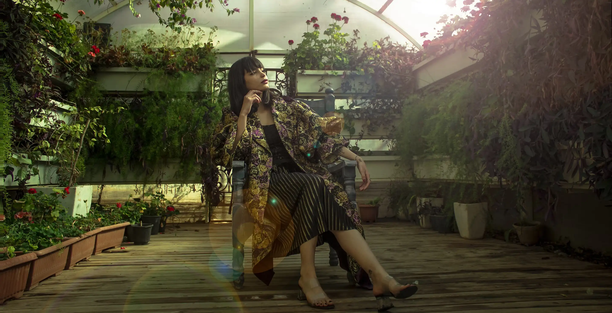

Vintage-Modern Fusion in Jakarta's Old Quarter
Capturing the feeling of finding grandmother's vintage coat in a modern city. Shot at dawn in old Jakarta, blending weathered walls with luxury fabrics. Each frame tells stories of timeless elegance meeting edge.
Minimalist Natural Light Fashion Editorial
Returning to photography's essence: the dance between light and darkness. Using only window light and minimal styling, we created portraits that feel like intimate conversations through subtraction.

Cultural Heritage Fashion with Traditional Batik
Working with traditional craftswomen in Solo, we created dialogue between centuries-old techniques and contemporary silhouettes. Model Sari brought personal stories to each frame, honoring cultural continuity.
Spontaneous Street Style Portrait in Milan
I spotted her reading outside Palazzo Reale, unaware of how afternoon light painted her vintage coat. The best fashion photography happens when subjects forget they're being photographed.
Dynamic Jewelry Movement Campaign
How do you photograph something that exists to catch light? We experimented with movement, asking model Luna to dance. The resulting blur and sparkle created poetry where jewelry became light itself.